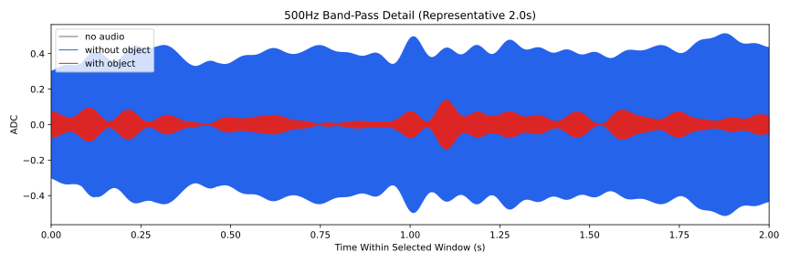
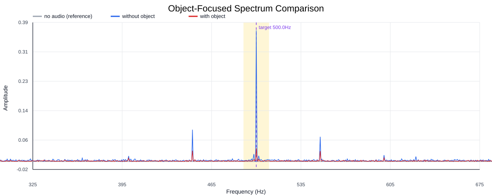
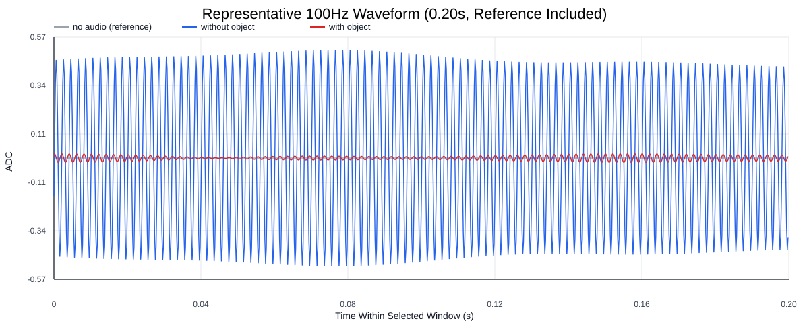
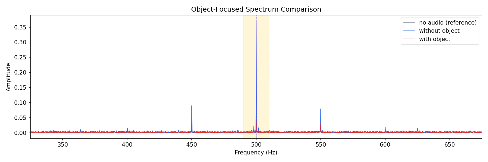
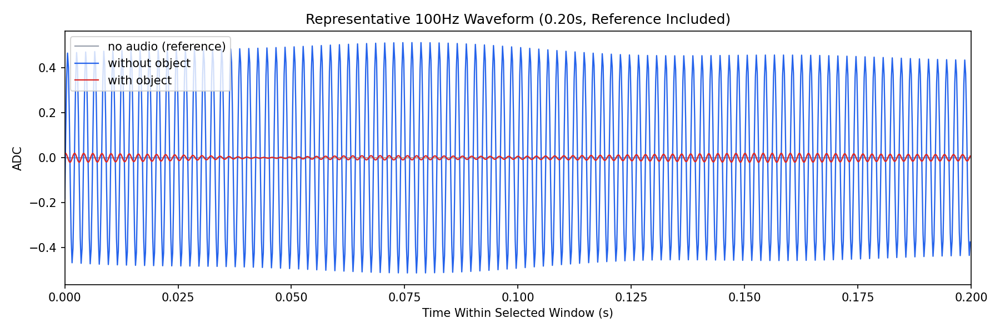

Background: F:\项目类文件夹\异物检测4.10\Data_Dual\frequency_sweep\0500Hz\repeat_01\raw\no_audio.csv
Without object: F:\项目类文件夹\异物检测4.10\Data_Dual\frequency_sweep\0500Hz\repeat_01\raw\without_object.csv
With object: F:\项目类文件夹\异物检测4.10\Data_Dual\frequency_sweep\0500Hz\repeat_01\raw\with_object.csv
| Metric | 无音频 | 100Hz无异物 | 100Hz有异物 | 无异物/无音频 | 有异物/无异物 | 有异物/无音频 |
|---|---|---|---|---|---|---|
| centered_rms | 0.007366 | 0.420618 | 0.165301 | 57.1050 | 0.3930 | 22.4420 |
| raw_target_amp | 0.000077 | 0.371244 | 0.042314 | 4847.4733 | 0.1140 | 552.5127 |
| filtered_rms | 0.000718 | 0.273503 | 0.038060 | 380.9529 | 0.1392 | 53.0126 |
| filtered_target_amp | 0.000077 | 0.371244 | 0.042314 | 4847.4733 | 0.1140 | 552.5127 |
| filtered_energy_ratio | 0.009501 | 0.422814 | 0.053014 | 44.5035 | 0.1254 | 5.5800 |
| window_filtered_target_amp_mean | 0.000161 | 0.382933 | 0.048883 | 2383.9102 | 0.1277 | 304.3151 |
| window_filtered_target_amp_std | 0.000890 | 0.052822 | 0.020742 | 59.3507 | 0.3927 | 23.3063 |




